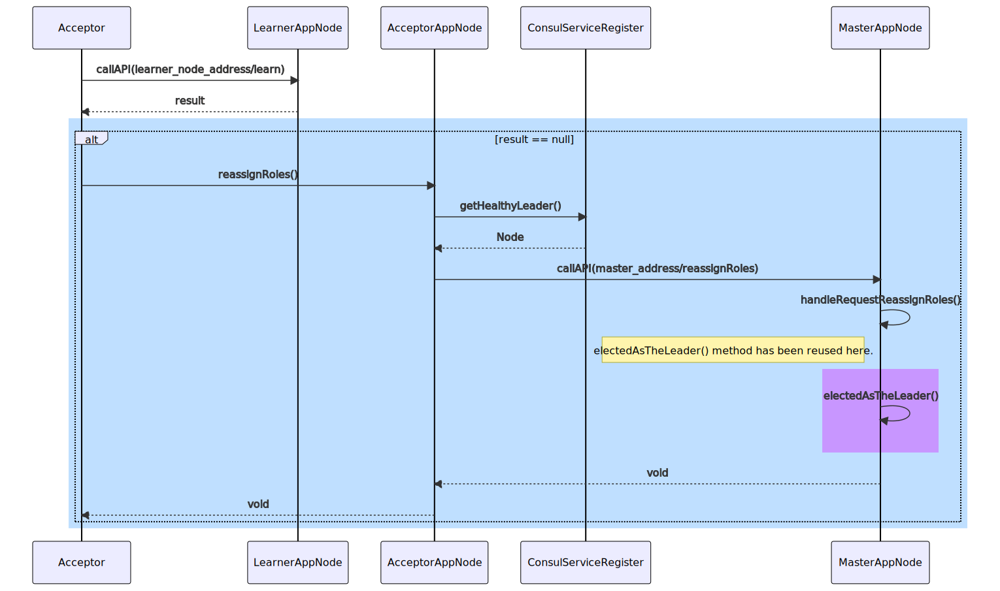
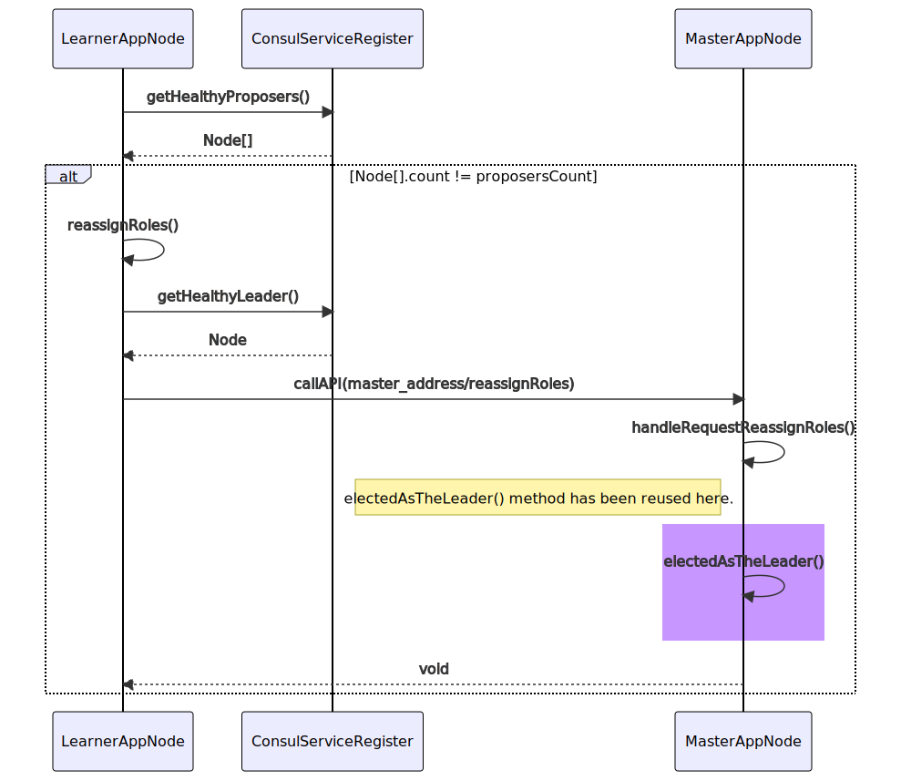
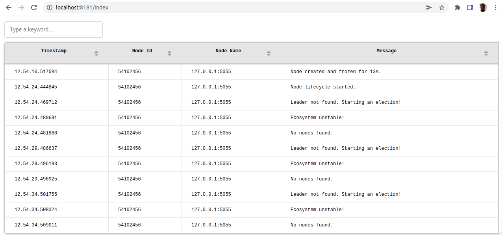

Discributed Computing Assignment
SE5090 [2022/JAN]
Topic Selection Calculation:
Numeric part of the Student No = 21929014
1st Round = 2+1+9+2+9+0+1+4 = 28
2nd Round = 2+8 = 10
3rd Round = 1+0 = 1
Modulus 2 of 1 = 1 => "Prime Number Deciding Distributed System"
Consensus Based Prime Number Deciding Distributed System
| Student No |
: MS21929014 |
| Student Name |
: Kantha Liyanage |
Overview
In order to demonstrate distributed computing requirements and to explain how distributed computing applications
typically work, prime numbers calculation is being used in this project. As the value of the number goes high,
the amount of calculations need to be done to identify whether that number is prime becomes substantial. The application
distributes this work load (evaluation ranges) among worker nodes (Proposers). Then based on the Consensus Algorithm application
decides whether the number is prime or not.
A cluster of identical worker AppNodes have been used in this project to accomplish this task. Each of these AppNodes are been given
unique addresses (an IP and a port) to identify them. The TCP Listener inside the AppNode uses the address to communicate with all
other nodes in the ecosystem. HTTP Web APIs are being used as the communication medium.
A Service Discovery solution is being used to maintain a centralized register of these
AppNodes in the ecosystem and to monitor thier health status at any given time.
Since the numbers data file can be accessed from any of the AppNodes in the discributed system, a wrapper Web API service has been used
in the project to enable this requirment.
A centralized Web API based Application logger has been used to increase the observability of the discributed system.
High-Level Architecture
Application Design
Every AppNode in the distributed system runs the same code base. The Bully Algorithm dynamically decides the master node in the ecosystem
and that master node distributes the work load among other nodes. Consensus Algorithm is being used to make the distributed system more reliable by
assigning some specific set of tasks to a small sub set of nodes, which ensures the final outcome is accurate in the end.
Class Diagram
OOP
Composition concept is mainly used to implement complex AppNode functionalities. The AppNode class is built using following decomposed classes.
1. Master class
2. Proposer class
3. Acceptor class
4. Learner class
5. ElectionHandler class (since this is a common functionality for all types of nodes)
Then there are other classes which work as side-car solutions.
1. KTCPListener
2. ConsulServiceRegister (wrapper)
3. NumbersFilerHelper (wrapper)
Sequence Diagrams
A set of Sequence Diagrams are given below to explain the key functionalities of the discributed system.
Leader Selection
The Bully Algorithm implementaion is explained in the below Sequence Diagram.
Roles Assignment
Soon after the leader is elected, that leader nodes assigns roles to other nodes in the ecosystem. That process is described bellow.
Numbers Evaluation Process
Then the work-of-the-work is being done according to the below sequence of actions.
Fault Tolerance
The Fault Tolerance strategy is implemented at 3 stages so that all major impacts to the ecosystem
are successfully mitigated.
1. Whenever a node detects that the existing leader node is not alive anymore, the node starts
an election straightaway to elect a new leader. That process is explained in the "Leader Selection" Sequence Diagram.
2. Whenever a non-leader node is detected as dead, there is a "re-assign-roles" functionality built into the leader node to bring back the
ecosystem to stability by reassigning roles for each node considering the number of nodes alive at that point in time.

3. Learner node checks whether number of alive Proposers are matching with the count received by the Leader node.
If those two are not matching, Learner node invokes the "re-assign-roles" functionality in Leader node.

Technology Stack

All the major functionalities are built from scratch, by only using the standard program language capabilities. Service Discovery tool Consul
is the only 3rd party component used in the whole system.
C# Console Program - AppNode
C# being one of the major high productivity programing platform, offers a comprehensive set of OOTB capabilities to build applications fast.
Console application type was selected to build AppNodes because it gives reliable multi-threading capabilities with built-in observability features
like Console outputs.
The project source code is organized based on the artifact type.
Numbers data file access service and logger service are also in the same source code base. Console input arguments have been used to
start these services separately.
Event Driven
C# Events have been used to augment critical functionalities from
Composition classes. When the events are emitted from these classess
AppNode class listens to these events and the concept is similar to a Pub/Sub model. All the subscriber methods are
placed inside the AppNode class and therefore it gives better readbility to the application code.
Leader Elected Event
Proposer Node has completed evealuating the number for the given range
Learner Node has completed number evaluation
Subscriber methods in AppNode class
Multi Threaded
AppNodes cannot have blocking methods since that prevents other activities of the node like inter-node communications.
Therefore multi-threading is needed for some specific functionalities like calculations and lifecycle methods.
Below
eveluate method does not block AppNode class execution flow.
Below
process method does not block AppNode class execution flow.
HTTP Web API Based Communication

KTCPListener class provides the inter-node communication capabilities to AppNode class. It emites an event which can be subscribed and
then can be implemented to produce useful functionality. Everytime a HTTP request is received
onClientRequest event is fired with all
the neccessary data objects concapsulated inside the event object.
Event
onClientRequest is subscribed inside the AppNode class.
All the API invocations received by the AppNode are then handled through this subscriber method. Identification of the required resource,
data received with the request from the client are taken from the event object. After the processing is over, this method must ensure a proper
response is sent back to the client as well.
Numbers File Access APIs
The distributed system needs a way to access the same list of numbers from each of the nodes in the ecosystem. The leader node wants to
read each number in sequence to distribute the work load among Proposer nodes. The Learner node wants to complete the number once it has
received all the responses from Acceptors. Once a number is completed, the leader is allowed to pull the next number to continue the cycle.
AppNodes are supposed to run on different computers hence it is not possible to access the numbers file exclusively using direct path reliably.
Therefore a separate services was built to expose file IOs to the ecosystem over Web APIs.
Two Web APIs were built to handle get-next-number and complete-number requests.
A helper class was built to wrap these two services, so that they can be accessed easily by the AppNode class.
How to start Numbers File Service
Consul - Service Register

Service Discovery solution
Consul is being used to register AppNodes in the ecosystem.
When an AppNode is created, that AppNode itself updates the service register about it's presence.
Every AppNode provides an API to expose it's health status to the service register. The service register pings
this API at regular time intervals to monitor the health of the AppNode.
*In the project Consul is being used in
Dev-Mode since it is not required keep data persistently.
Consul UI URL
http://localhost:8500/ui
Consul Commands
# Start Consul
consul agent -dev -enable-script-checks
# Stop Consul
consul leave
Starting Consul in Dev mode
AppNode registering in Consul with health checks
AppNodes showing in Consul Web UI
AppNode unique ID and Type are used as service Meta data
AppNodes health monitoring in Consul Web UI
Unhealthy AppNodes
AppNodes are searched/discovered based on their Meta data.
Console and MongoDB Based Logger

The AppNodes use both Console output as well as a remote logger service to give observability to the distributed system. The remote logger service
uses a MongoDB to store log entries and the same service provides a HTML dashboard to view all logs centrally.
MongoDB logs collection
How to start the logger service
Centralized log view of all nodes

Project Artifacts
End-of-Document